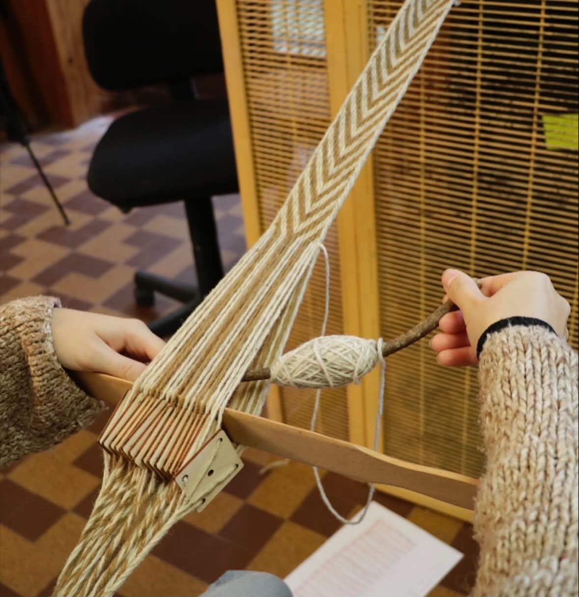
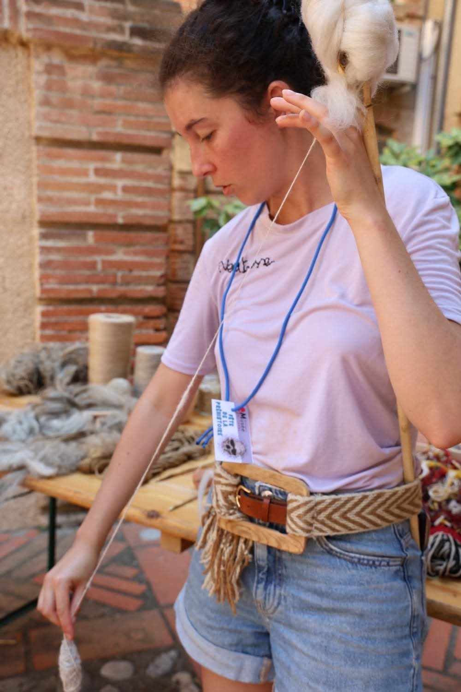
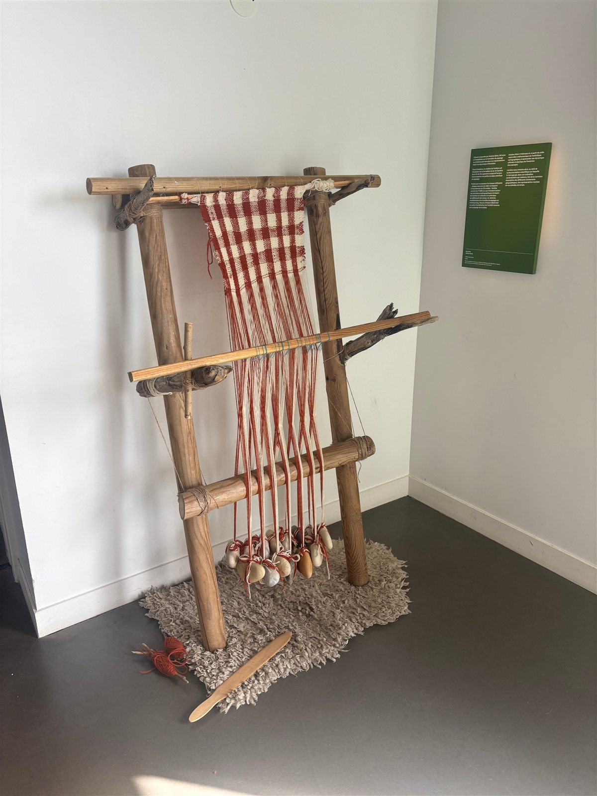
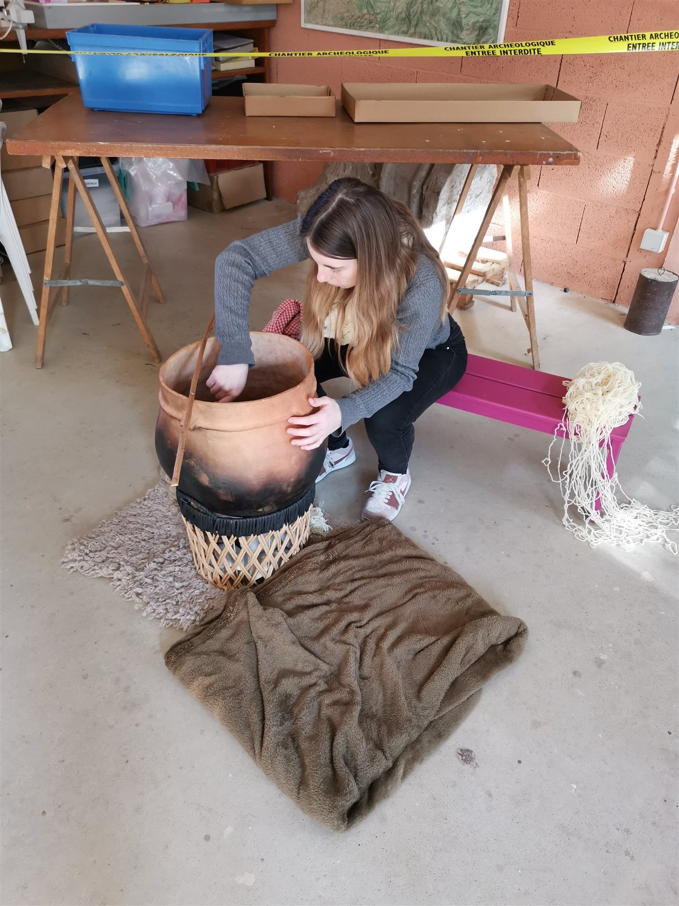
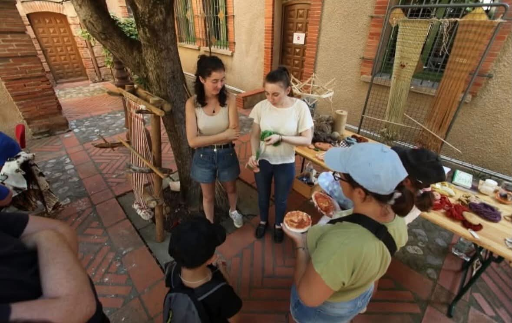

La matière,
le geste, le partage.
Filage, tissage et teinture naturelle : imaginons une intervention adaptée à votre public.
Découvrir
Filage

De la fibre au fil
Avec Neotisse, découvrez la transformation de la laine ou du lin en fil. L’atelier invite à observer les fibres, comprendre le geste et s’initier à sa pratique.Public concernéScolaires, centres de loisirs, grand public et structures culturelles.
ModalitésInitiation ou démonstration ; niveau, effectif et durée définis selon le public.
Sur devis, selon le format et les conditions d’intervention.
Demander un devis
Tissage sur métier vertical

Comprendre la naissance d’une étoffe
Découvrez le rôle des fils de chaîne et de trame à travers l’observation et la pratique du tissage sur métier vertical.Public concernéScolaires, groupes, musées et événements culturels.
ModalitésDémonstration ou atelier accompagné ; installation et espace convenus avec la structure.
TarifSur devis, selon le format et les conditions d’intervention.
Demander un devis
Tissage aux tablettes
Explorer le fil autrement
Une découverte du tissage aux tablettes pour comprendre comment le mouvement des fils peut produire des motifs et des bandes tissées.Public concernéGroupes, publics scolaires et visiteurs de lieux culturels ; adaptation selon l’âge.
ModalitésDécouverte guidée ou initiation ; nombre de participants et durée à convenir.
Sur devis, selon le format et les conditions d’intervention.
Demander un devis
Teinture naturelle

Découvrir la couleur par les plantes
Explorez avec Neotisse les plantes tinctoriales et leur rencontre avec les fibres. L’atelier relie observation des matières, préparation des couleurs et découverte des savoir-faire.Public concernéStructures culturelles, groupes scolaires, associations et grand public.
ModalitésAtelier ou démonstration ; conditions d’accueil, espace et matériel précisés dans la proposition.
Sur devis, selon le format et les conditions d’intervention.
Demander un devis
Interventions sur mesure

Un format construit avec vous
Associez plusieurs savoir-faire ou imaginez un parcours de médiation autour d’un thème. Neotisse adapte sa proposition à votre projet, votre public et votre lieu.Public concernéScolaires, centres de loisirs, établissements culturels, associations, entreprises et événements.
ModalitésSur devis ; indiquez le lieu, les dates souhaitées, le public, l’effectif et les objectifs.
Sur devis, selon le format et les conditions d’intervention.
Demander un devis
Préparer votre intervention avec Neotisse
1. Votre projet
Précisez le thème, le public, l’effectif, le lieu et les dates envisagées.2. Un format adapté
Échangeons sur les objectifs, la durée, les conditions d’accueil et le matériel.3. Une proposition
Les modalités et le tarif sont précisés dans un devis avant confirmation.Questions sur les ateliers textiles
Quel atelier choisir pour son public ?
Le filage fait découvrir le passage de la fibre au fil. Les deux formes de tissage permettent de comprendre la construction d’une étoffe ou d’une bande à motifs. La teinture naturelle invite à explorer les couleurs et les matières. Une intervention sur mesure peut associer plusieurs de ces découvertes.Quelles informations transmettre pour un devis ?
- Le nom de votre structure et les coordonnées de la personne à contacter.
- Le lieu, les dates envisagées et les contraintes d’accueil.
- Le public, son âge et le nombre de participants.
- Le thème souhaité et vos objectifs pédagogiques.